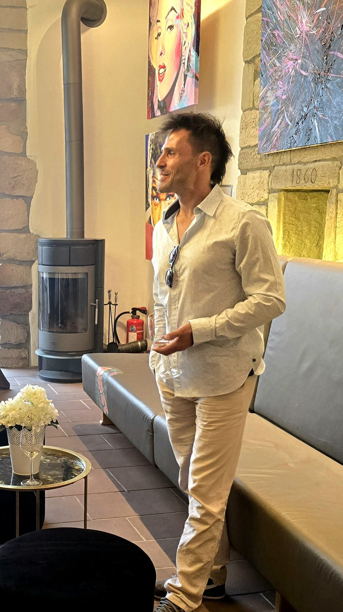

Atelier
Thorsten Weitz (*1978) begann seine künstlerische Reise im Jahr 1995. Seine frühen Arbeiten waren geprägt von der Faszination für das Weibliche und der ausdrucksstarken Intensität menschlicher Augen. Bereits seine allerersten Werke fanden auf Anhieb Käufer und Gönner in und um Nördlingen – ein früher Erfolg, der das fundamentale Potenzial seiner Bildsprache unterstrich. Dennoch entschied er sich zunächst für den Weg in das Bildungswesen und arbeitete viele Jahre als Lehrer. Neben dem Schuldienst blieb die Kunst sein ständiger Begleiter: Vereinzelte Ausstellungen sowie Werkverkäufe säumten seinen Weg. Zugleich vertiefte er sein Wirken im pädagogischen und künstlerischen Raum durch Ausbildungen in der Natur-, Rhythmus- und Theaterpädagogik sowie als Lehrer für Intuitives Bogenschießen. „Die Leinwand war für mich schon immer ein Raum, in dem Bewegung, Natur und menschlicher Ausdruck zusammenfließen. In den Jahren als Pädagoge und Performer habe ich gelernt, wie intensiv Raum und Präsenz auf- und miteinander wirken.“ — Thorsten Weitz Die Jahre 2016–2020 forderten eine fundamentale Neuorientierung – geprägt von tiefen persönlichen Zäsuren, dem Wandel vertrauter Familienstrukturen hin zur Trennung als Vater dreier Kinder, gesundheitlichen Einschnitten sowie dem Abschied von bisherigen Sicherheiten. „Wenn gewohnte Fundamente wegbrechen und man sich existenziell neu ausrichten muss, bleibt nur das Wesentliche. Die Leinwand wurde für mich zum Ort, an dem Wucht, Schmerz und der unerschütterliche Mut zum Neubeginn eine sichtbare Form fanden.“ — Thorsten Weitz Diese Phasen des Loslassens und der bedingungslosen Selbstakzeptanz führten in die Körperarbeit des Lomi Lomi und Qigong – dem Spüren physischer Resonanz – sowie in die Vertiefung und Lehrlingsschaft der Sweet-Medicine-Philosophie Nord- und Südamerikas. Sie schufen das Fundament für seine heutige künstlerische Haltung. 2024 folgte die konsequente Entscheidung, die freie Kunst vollkommen in das Zentrum seines Lebens zu stellen und seine Herz-Vision zu verwirklichen. Prägend für sein Schaffen ist der schamanische Pfad der Sweet Medicine aus Arizona. Die Philosophie der 20 Ur-Kräfte des Universums sowie das Prinzip der radikalen Selbstverantwortung fließen direkt in den malerischen Prozess ein. „Wir sind die Ursache von allem, was wir erleben. Diese Erkenntnis fordert eine ehrliche Haltung gegenüber dem eigenen Sein – und sie zeigt sich auf der Leinwand: Meine Arbeiten sind ein stetiges Ausbalancieren von männlichen und weiblichen Kräften, ein Tanz der Elemente und das Ringen um innere Balance.“ — Thorsten Weitz Heute vereinen die Arbeiten des Freiburger Künstlers diese vielfältigen Lebenserfahrungen zu einer reifen, kraftvollen Form des Synthetischen Expressionismus: - ein spannungsvolles Zusammenspiel aus kontrolliertem Chaos und reiner Energie. Seine Bilder sind nicht nur ästhetisches Objekt, sondern energetischer Resonanzraum für Transformation.